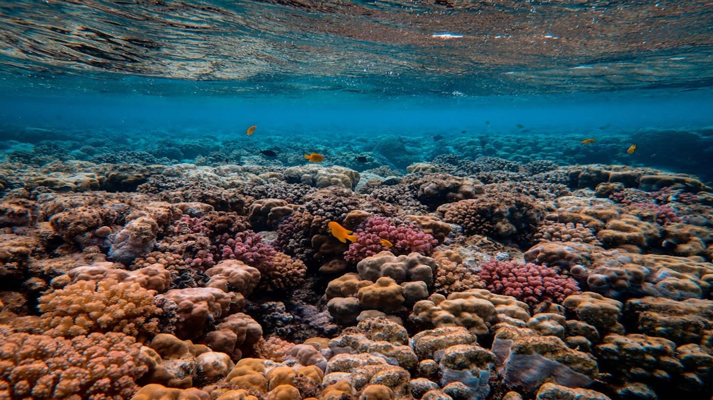
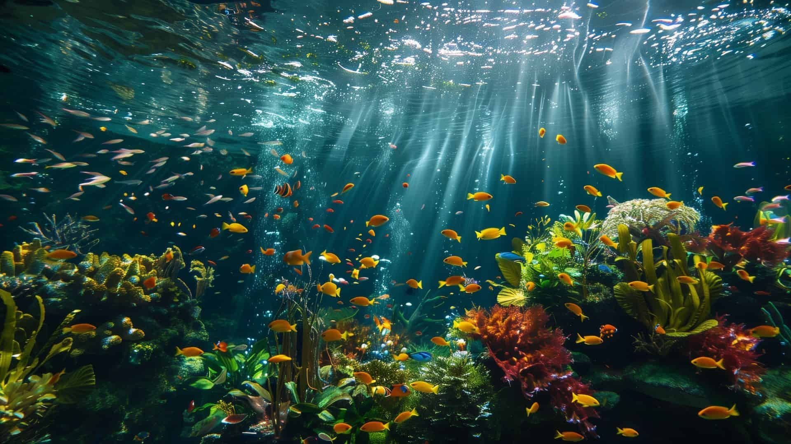
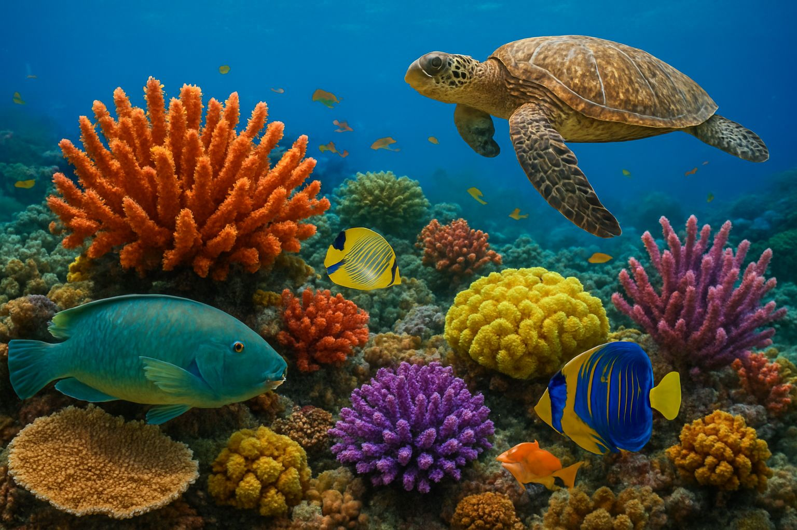
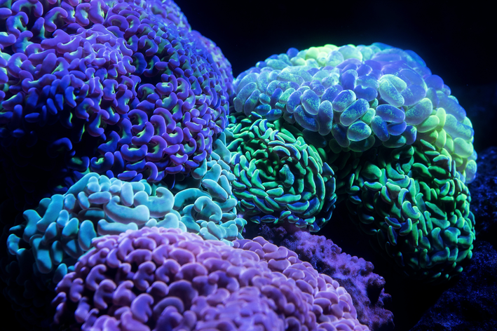

Eles são extremamente coloridos devido a micro-algas chamadas Zooxantelas. Estas algas microscópicas vivem nos tecidos dos corais e, a partir dos produtos nutritivos da fotossíntese que realizam, ajudam o coral em sua nutrição, além de estarem bem seguras e protegidas em seu interior. Além disso, os corais também têm pigmentos próprios que contribuem para as diversas cores, mas podem desaparecer quando os corais estão estressados, resultando no fenômeno de branqueamento.

São animais marinhos pertencentes ao filo dos Cnidários e vivem em mares tropicais de águas quentes e claras. Assim como os liquens presentes nas árvores da Trilha do Lago, a presença de corais saudáveis indica uma boa qualidade da água daquele local. Os corais vivem presos ao fundo do mar, como se fossem plantas, formando colônias de grandes dimensões. Seu esqueleto de calcário oco é composto de carbonato de cálcio, carbonato de magnésio e outras substâncias.
Vinicius dos Santos
Maria Julia
Vinicius Romeo
Isadora Caldeira
Yara Rodrigues